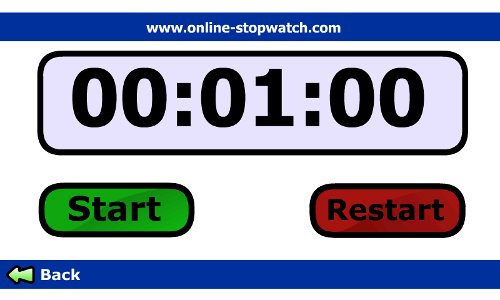

Author Archive for RogerS
By RogerS April 10th, 2009
Categories: Internet tablet, observations, video and walkaround web
For the last ten days I’ve been putting an Amazon Kindle 2 through its paces, wondering how desirable a dedicated e-reader is.
The resolution of the Nokia Internet Tablet screen is 225 pixels-per-inch; on the Kindle 2,
it’s 167 ppi. In a one-inch square, that means there are nearly twice
as many pixels on the full-color NIT screen; too, video plays
marvelously there. “White” on the 16-level-gray-scale K2 screen is,
well, light gray; animation is not possible; and video doesn’t even enter the realm of speculation.
Yet the K2’s 6-inch-diagonal screen encompasses wonderfully more
text than pocket-sized devices. And that is no small thing. In these
electronic times I have re-subscribed to the print edition of the New
York Times, added magazine subscriptions and now carry NYPL and
Montclair library cards in my wallet; still, 90 percent of my reading
is done on-screen. The pencil-thin K2 capitalizes on our need for reading to be mobile beyond any previous device.
As for portability, the K2 doesn’t just talk the talk. Native-born
to the walkaround web, its purchase enables you to browse all the
non-moving-pixel parts of the internet from anywhere within reach of
Sprint’s 3G wireless network, for no cost whatsoever. And buy books at
any hour, with immediate access.
In so many ways inferior to an Internet Tablet, but not without
charm. However, that’s not a Kindle 2 pictured below, but a prototype
of the so-called CrunchPad, Michael Arrington’s quest for a $200
“Macbook Air-thin touch-screen machine that runs Firefox and possibly
Skype on top of a Linux kernel.”

The more you learn about the CrunchPad, the more it justifies the same label put on the K2, “monotasking hardware.” It is (or will be) a just-browsing-please tablet.
Good Morning Silicon Valley pointed me to a well-put response at CloudAve by Zoli Erdos, who wrote:
It's not a full-fledged computer, and it should not be. It's 2009 and we no longer have just one do-it-all computer.
A tablet for lazy surfing, a netbook for travel, an iPhone for when we don't even want to carry that much, a full laptop for everyday work, and even a full desktop as the multimedia workhorse: at these price levels we may very well have 5-6 or purpose-designed computers, situational devices. Pick up one, continue on the other as you move around — the switch should be seamless ...
Well, I'd sure like a 12-inch screen for surfing ... and something that fits in my pocket ... and that I can read on while I'm falling asleep ... or do some work on ... or watch a movie on ... Yes, maybe 5 or 6 different devices is what I want.
By RogerS April 9th, 2009
Categories: Nokia, phone and rumors
Most
of what I learn about Nokia and the internet tablets comes from
following links posted in blogs written by more clued-in folks. One
link today was to a post about the QT Animation framework written only yesterday by Kaj Grönholm. (Neat video here.)
Another link I tripped over was much older. And so I just learned today that the CEO of Nokia was being interviewed on YLE (the Finnish national broadcasting corporation) almost six weeks ago when he let drop that, why, yes, Nokia is thinking about making laptop computers.
As Reuters blandly noted,
rumors about such a move have been floating around since “late last
year,” but CEO Olli-Pekka Kallasvuo’s on-air “comment was the first
official admittance of such plans.”
Determining the role that the Internet Tablet will play in the
cellphone maker’s future has been nigh unto impossible to ken. After
all, Nokia will have to have an iPhone simulacrum and having that
complicates the tablet position. And if Nokia is going to
reverse-traverse Apple’s computer-to-phone trajectory, well, there are
plenty of complications in separating out the tablet, UMPC, netbook,
ultraportable and notebook niches even before you throw phone
connectivity into the mix.
What can I say? We live in interesting times.
By RogerS February 5th, 2009
Categories: Internet tablet, flash and software
Keeping
track of how much time you have left to talk in a presentation or a
meeting presents special difficulties. As evidence that no good
solution exists for the problem, I point to the universal practice of
appointing a single individual to keep track of the time who is
delegated to conveys the impending end of the allotted time to the
speaker. Any time a simple task is done by a human, you know it’s not
all that simple. But we all know that watch displays are too small, the
laptop is occupied presenting slides, a one-minute alert is fine but
the speaker has no way to know how close am I to the one-minute mark?
I ran across a big countdown timer at online-stopwatch.com, written
in Flash. Running on a Nokia Internet Tablet, the numbers are large
enough to read from ten feet away or further. It’s a perfect use of the
NIT’s 4.3-inch screen.

Different versions of the program display a stop-watch (counting
up), splits, or a circle clockface with a single hand sweeping once
around the face whatever time you have entered.
You can run this useful app from the website if you want. Me, I
simply downloaded the .swf file, put it into a /tools folder, opened it
in tablet’s browser and bookmarked that local copy. Easy to grab. And
of course the graphics resize nicely as I switch between standard and
full-screen display. Hey, thanks, online-stopwatch person!
By RogerS February 2nd, 2009
Categories: Internet tablet, Nokia N800 and Nokia N810
Last
summer my N810 was stolen during a library visit. Since I praised Nokia
when it first released the Internet Tablet for ruthlessly paring away
the inessentials — the 770’s absence of a phone, hard drive and
keyboard stunned most mobile-device observers — I didn’t replace it,
but instead relied solely on my N800’s* for my tablet needs.
Besides I already had a Bluetooth keyboard and GPS. I didn’t have to have the newer Internet Tablet if I wanted those features.
Then last Thursday, I ordered an N810 from Buy.com, paying $227.86**
for the little treasure that arrived this morning. (It’s sitting next
to me on the computer desk, charging now.)
Why?
I’ve been pondering that. Maybe subconsciously I think I’ll use the
built-in GPS (even though I rarely use the external GPS I own). I don’t
really type faster with the N810’s slide-out keyboard, though I know
having it simplifies using some programs. Does losing display real
estate to an on-screen keyboard interfere with my thinking processes
more than I’ve been aware? Could be. I know that my tap-drags to get an
upper-case letter succeeds only about 60-80 percent of the time, so
entering some characters is way slower than is good***.
And, trivial as they may seem, I know I’ve missed the screen-lock button and the cover-that-doesn’t-fall-off.
These are little things, and I’m struggling to find any bigger
reasons for using an N810 instead of an N800. OK, “little things mean a
lot,” but two hundred-plus dollars’ worth?
Still, I’m content with my purchase. Something in me knows this is a
good deal, even if I can’t consciously say why. Even though logic says
to preserve my cash for some forthcoming, more dazzling new tablet. Not
sure why, but definitely sure it’s a good thing.
Like I said, I’m content. And that’s a good measure.
__________
* Um, yes, I’ve acquired three used N800’s, intending to gift them to
family in California, Texas and Georgia, but I’m like Scrooge McDuck in
his private vault when I’m cooing over my tablets and I can’t seem to
let them go . . .
** Including taxes, shipping and handling
*** Years ago, IBM released a study showing that any interruption in
typing that was longer than a tenth of a second drastically reduced
your efficiency.
By RogerS October 15th, 2008
Categories: Internet tablet and walkaround web
I
like being able to use my Nokia Internet Tablet as a computer, so that
in a pinch I can work in a spreadsheet or edit some word-processing
file.
But I got over the notion that it would be a computer for me and not primarily a web and e-reading device a long time ago.
Yes, the NIT really brought the price of a carryaround Linux computer way down.
But today I see[1] that Target has an Asus 7-inch EEE, complete with wifi, keyboard, 800×480 screen and 3 USB ports, for $270. BestBuy has the Asus 8.9-inch EEE (1024×600) for $300. And soon BB will be selling the 10-inch MSI Wind (1024×600, 120GB drive, 1.6 GHz Atom processor and Windows XP Home) for $399.
These are computer-first, carryaround-second
devices, with pricing that seems to have sped past Nokia’s. If
computing were my primary portable need, I’d be looking at them instead
of the 8-ounce pocket-sized NIT.
To stand out in the crowd, the Internet Tablet needs to be the best
at what it does best. Versatility counts, but let’s keep in mind what
our primary need is, what we want to see first when we turn the device
on. And really shine at that.
So, yippee! that the N810 WiMAX Edition is out, and hurray! that HSPA is in the works. Getting the internet — even walking or driving around — that’s what it’s all about.
_____
[1] Via techbargains.com
By RogerS October 7th, 2008
Categories: Internet tablet, Maemo, Nokia 770, Nokia N800, Nokia N810, observations and walkaround web
I met Reggie in Berlin before the Maemo Summit, and he was working on his presentation, What Users Want
(which will be posted soon, btw). I looked over the notes that Krisse
Juorunen of Internet Tablet School had sent him and made some
suggestions. I thought about how the tablet is being used today and how it might be used — which was exactly what Ari Jaaksi asked a group of Maemo users the next evening.
I ended up putting my thoughts down on paper (unable to use the
hotel’s power converters with Nokia’s AC-4U battery charger!). I hadn’t
put in for a speaking slot, so making notes was just a way to keep my
head in the topic while Reggie was working on his slides. He didn’t
finish till 4 a.m. on Thursday night, so I kept writing. Here is what I
wrote up but didn’t say at the Maemo Summit:
What more do we want?
In Ari Jaaksi’s talk at OSiM World, he characterized the reception of
the 770 Internet Tablet as people asking, “What is this PDA that
doesn’t have PDA functions? What is this phone that isn’t a phone?”
No one had seen a mobile device like this, explicitly designed for
internet use: a full computer without a keyboard, without a hard disk,
which fit in your pocket and was light enough that it didn’t act like
an anchor.[1]
A computer you could use standing up. This was cool, but what was
truly revolutionary was that you could surf the internet while on the
move. This was so startling, sensible and incredible that all you had to do was use it this way once to understand why you’d want such a tablet. It was nearly two years ago when I walked twenty blocks down Seventh Avenue in New York on my way into the office, all the while browsing nytimes.com and washingtonpost.com, but I remember it like it was this morning.
This was real surfing, the real web and not the pseudo-web found on cellphones, web pages at full width, without any sideways scrolling.
As it happens, I belong to the first generation of kids who grew up with computers[2], and the upside of growing up under Moore’s Law has been a sharply honed appreciation for the marginal cost of production of electronic goods.[3] In general this means we know we don’t have to wait long before we can afford some new feature. But a little-understood side-effect is a widespread suspicion of paying for certain things electronic, especially if the vendor erects artificial barriers around them. Who would pay for email today? Or IM? Or believes that we should have each paid a penny to Unisys every time we used a GIF graphic? After "this long" — which is measured in seasons, not years — we don’t want to pay for something really useful based on the logic that somebody or other happened to think of first and we owe them.
That is why the second Internet Tablet, the N800, seemed to me to be revolutionary too — now we could have face-to-face voip calls, visual IM sessions lasting hours if we wanted, untethered from our desks and sidestepping the venal pricing schemes for similar services using cellphones which telecoms wanted to put into effect that were already five to six years out of line.
Likewise, the N810’s built-in GPS could enable radically new location-based services — Where in the museum are all the students on this field trip? What is the painting I’m standing in front of and what does Wikipedia say about it? — that are conceivable only when you combine the full internet, a full computer and carryaround size.
So I want to note that all three devices have legitimate claims of being revolutionary.
I marvel at that, but that’s not what I will expect from Nokia with every new device.
As a strategy, Nokia can’t do better than to add applications that take full advantage of its superior screen. We’ve been told about the coming high-def camera connectivity, which fits this thinking. Likewise, the 800-pixel-wide screen could show more map detail than any GPS screen when Nokia first released its GPS package and then built that technology into the N810. That’s the right kind of thinking.
I read over at Tabletblog something Thoughtfix suggested. He said he wanted a bridge app between his camera and blog (and online photo sharing sites) — something to crop, rotate and color-correct images on the fly. I second that. Anything that facilitates camera-to-web flow makes the Internet Tablet more indispensable.
Stop and think about it. It’s not just because of the big screen. The NIT fits into this flow because it’s a computer. It has the processor and memory and programmability, way more than anyone can stick in a camera or cellphone. Take advantage of that.
When I’m asked what I want in the tablet — what users in general might want — I think about what apps on the desktop will acquire a whole new dimension when untethered from the desktop. Basically I’m just looking for a lesser version of the liberating effect we first experienced when the 770 untethered the web.
So, obviously, I think about e-books, since the most infamous requirement for their success, as Michael Kinsley so memorably put it, is that you can take your reading with you to the john.
Now, of course, FBreader gives us this already, it being probably the best engineered open-source e-reader around, providing the longest list of formats read and the greatest personalization of presentation.
But you can’t buy any of tens of thousands of e-books sold by Amazon or Sony for reading on their black-and-white e-Ink devices. Something like one million Sony Readers and Amazon Kindles will be sold this year.
Imagine that — people paying $359 and $400 for a monochrome, slow-drawing, essentially single-use device just because they like to read.
Nokia — which was so far-sighted in 1998 that it participated in the creation of the first e-book format — ought to be hounding Amazon harder than it ever did eBay/Skype to put its proprietary software on the Internet Tablet.
All that will do is increase book sales at Amazon, increasing the number of potential customers vastly, and why should that interest Jeff Bezos?
Me, I’m only interested in being able to read Dave Barry’s new book, Science Fair, while I’m stuck in my third doctor’s waiting room in two days, as I was recently, but that’s not even in the realm of possibility[4] if I can’t get it electronically because getting to a bookstore is impossible for me these days.
For that matter, I’d like to be able to keep reading that book while I’m driving to and from these doctor’s offices and ferrying the kids hither and yon.[5] Text-to-speech counts for double, too — I get my book and it’s something that needs more computer than the cellphones can manage.
Build on your advantages. That’s the best expression of what I’d like to see coming from Nokia.
-----
[1] There were “web pads” before the 770 — WiFi-equipped, touch-sensitive, disk-drive-free tablets, usually running an embedded Linux, like Screen Media’s FreePad. But none of them light enough, small enough and inexpensive enough to be indispensable when you walked out the door.
[2] There were fewer than 10,000 computers in existence around the world when I first learned to program as a schoolboy, 85,000 when I bought my own first computer. That put me in the first .01 percent of computer owners and a user of the first .001 percent of computers.
[3] See The Law of Computer Entropy.
[4] Actually, Science Fair’s release date is October 14, so that’s another reason.
[5] On the level of "Samantha," Sangeeta and Lee, voices from RealSpeak TTS, Callie from Cepstral or Heather from Acapala Group.
Continue reading ‘Talk-talk: What I didn’t say at the Maemo Summit’
By RogerS September 23rd, 2008
Categories: Events, Maemo and Nokia
As the Maemo Summit came to a close on Saturday afternoon, I was
sitting down at the front of the rmeeting room, looking for an outlet
to charge my Internet Tablet. An unexpected and oddly stirring session
on where we were going had ended abruptly, and now the microphone had
passed from the audience back to the stage. The last words of these
eventful two days were being issued by the same keep-things-moving
ringmaster who had enforced the five-minutes-and-not-one-second-more
lightning talks, and in the same keep-things-moving tone.
And I found myself calling loudly for the microphone, interrupting
things simply to prevent the benediction from being pronounced on our
assembly.
Some three hundred people were about to leave the Maemo Summit,
having experienced an extraordinary feeling of optimism and gratitude.
Happiness, you might even say.
Achieving that result was no small accomplishment.
I didn’t particularly have anything to say. But if there was one
thing I knew, it was that there was a more fitting tone to close on
than merely reminding everyone of the last item on the day’s agenda.
So when the microphone was hurriedly passed to me — What? We’re ending now!
— I just spoke about what I was feeling: gratitude. And that gratitude
was most focused on the ringmaster standing in front of us then.
Because of course the person most responsible for the Summit’s having
taken place and had such remarkable results was Nokia’s Quim Gil.
I don’t know if I would say Quim has a thankless
job, but surely in his role of interfacing with the Maemo Community
and, as he says, “promoting intelligence at maemo.org,” he has to field
more of our negativity and dissatisfaction than anyone else at Nokia.
Quim is forceful and optimistic and more tolerant of benighted
foolishness than anyone has a right to expect. (Anyone expressing that
foolishness, that is.) I know this from my own dealings with him, in
which I have evinced rather more than usual of my benighted and
dimwitted side.
From the initial notion of a Maemo conclave — which he suggested
spontaneously if not off-handedly during a cab ride — to organizing the
schedule and then orchestrating its execution, every part of the Summit
bore his fingerprints.
In no small measure, the remarkable vibrations we experienced
resulted from Quim’s efforts, his passion, his optimism and tolerance
and forcefulness.
We have a lot to thank him for — and others too, but let’s focus on one thing at a time.
I hope that our thanks for all Quim did to bring
this Summit into existence and make it so eventful will help balance
against the manifestations he experiences of our less gracious side the
rest of the time.
At least we can say that we — people here and everywhere who make up
the Maemo Community — are consistent in our behavior: we are always
going to hold someone responsible for something that just happened.
In this case, it’s you, Quim. This has been a great experience for all of us. Thank you.
Well, that’s what I was trying to say, when I said whatever it was
I actually said. I kept it short and didn’t mention any of the traits
of the magnificent I’ve identified here, but I figure Quim needs much
more of our gratitude expressed than he usually hears, so I have
permitted myself to add the unexpressed subtext of that verbal thanks
here.
Plus I don’t work behind the scenes, so I don’t know who the unsung
heroes of our Maemo Summit are. Our gratitude extends to them as well,
of course, but for today, Quim will have to stand in for everyone’s
contributions. He’ll need to apportion our thanks to the deserving
others on his own.
Note: Part I: What I didn’t say is here and Part II: What someone else said is in progress.
By RogerS September 22nd, 2008
Categories: Maemo, Nokia and observations
Up until last week, getting Maemo developers, Nokians and what
Reggie describes simply as “enthusiasts” all together in one location,
a Maemo Summit, seemed to me to be a good idea. I was wrong, I realize
now: not a good idea.
A brilliant idea.
We all know the next steps in the development of this “mobile
internet device” niche are critical — critical for Nokia, for the
market itself, for the users, especially those first adaptors (that
would be us, the posters and readers of itT forums), the recently
dubbed “Maemo Community.”
At several disparate points in the summit, speakers noted how
putting, say, coders and UI designers on the same team made for faster
progress, fewer missteps, information being communicated with less
noise.
Having the Summit took this idea of integration a level higher:
instead of all the misconceptions that occur from separated
contributors, whose every written note can be misinterpreted and its
tone wildly misconstrued, now three-dimensional humans exist in the
spot where virtual constructs and avatars stood.
The takeaway
In four days in Berlin — two at OSiM World (Open Souce in Mobile)
followed by two at the Maemo Summit — I learned about enough
interesting developments and projects to occupy a mere 10 or 12 days a
week to follow completely, and participate in some.
I learned the NIT’s desktop-y menuing approach — a “choice”; often critiqued and -criticized over the last 3 years — was no choice at all but a justification for the tablet’s creation, to allow this tiny-screen-cellphone maker to explore and learn about non-cellphone, desktop-type approaches.
I learned about apps I’d never realized existed, or not realized their full capabilities, a dozen or more I’m dying to dive into over the next months.
And I learned in vastly more specific detail about Nokia’s plans, about the ijntegration of QT into the OS, about Maemo 5, Fremantle and Hamattan.
Well, OK, at any conference of technical types, revealing details about previous releases come out, we’re exposed in a matter of days to a wider range of current features and apps than we’ve seen over months and future directions come into sharper focus and specifics of the next release are spoken aloud.
Putting information into the Maemo ether justifies a conference. Transitioning into a new Nokia/develolper/users-cum-enthusiasts relationship poses so many tricky questions that a get-together is justified just from the way it can get everyone on the same page. What I observed at Maemo Summit, however, makes these essential accomplishments seem trivial.
More than the sum
Because the sum of all these benefits adds up to something less than what we took away from the Summit. Partnerships are built on trust, and in big ways and small, in ways corporate and personal, professed in the abstract and expressed in the particular, the team at Nokia exhibited their trust in our community and earned ours.
I don’t know if “Where do we go from here?” got answered, or if “Can the Maemo Community be defined in the way that Linux, Mozilla, Apache and other communities are?” was answered either.
But now I’m not worried about those questions.
Because the trust that emerged from this summit eviscerated out such mundane concerns. The trust was like a pocketful of light that everyone held and drew out of their own pockets over and over, without end.
Enthusiasts
When Reggie Suplido, the founder of itT, described itT to the cellphone-industry attendees of OSiM World, he described us as an “enthusiasts’ site.” Not just users or device-owners, but people who enthuse about the NIT.
That describes me perfectly.
And now I know it describes Quim Gil and Ari Jaaksi, too, whose enthusiasm manifests itself very different from my own, but unmistakably so.
And MaemoMappers’ John Costigan, INdT’s Marcelo Eduardo and Eduardo Lima, kernel concepts’ Simon Budig, Maemo webmaster Niels Breet, qole (aka Alan Bruce), microB’s Josh Soref , and others whom I won’t name here but will identify in subsequent posts just because their enthusiasm is so contagious and I have to point to each such source I identify.
In the past, I knew that the Maemoites at Nokia were navigating in unknown waters. My belief in their good intentions was based on several startling but unambiguous actions, hints and encouraging statements dropped here and there, and a couple of face-to-face meetings, one with Ari Jaaksi and one with the then- and the soon-to-be VP whose purview included Nokia Tablets.
About Nokia
Over the past three years, they’ve earned my trust, but in less than a week my trust has been anchored in a hundred personal observations, the unconscious and nonverbal ways we measure everyone we meet, friend, employer, salesclerk and fellow passengers in a subway car.
It’s impressive when a company puts it money where its mouth is. Nokia is a huge publicly traded corporation whose profitmaking goals are never to be doubted. Its devotion to open-source is always cast against its capitalist imperative — Will it make me more money? — so I want to hear constant reminders of how it counts on benefiting from Open Source (I want Nokia to be true to itself, of course, and hypocritical fidelity to OS altruism would only destroy the company’s essence).
And I see Nokia becoming a gold sponsor (contributing $100,000 annually) of the Linux Foundation.
See it starting its major FOSS initiative on top of existing FOSS projects (unlike Google, with its all-done-by-us approach to the "eventually it’ll be open source" Android).
See it responding to Apple’s “only-a-benevolent-dictator-knows-what’s-best-for-you” approach by giving the user community responsibilities it formerly reserved to its own development team.
See it pay UI designers to work with independent developers and guide them in this area — small-screen, touch-screen, user expectations and preconceptions — that they have the least expertise in.
See Maemo’s open-to-closed ratio — already higher than others’ — keep climbing.
Character reference
So, yes, I’d be happy to serve as a character reference for Nokia’s tablet effort, were it needed. Not because I got a plane-ticket-and-hotel subsidy to attend such a key event. But because in every way I was shown that this trust is deserved.
I guess I’d have to say that my response to the Maemo Summit was enthusiastic.
By RogerS September 18th, 2008
Categories: Nokia, general and maemo.org
As a nonce word, the pronunciation of maemo isn’t
something you can check in a dictionary. And given its provenance, I’d
venture that most people first encountered this word in print, and not
orally.
Should each vowel be pronounced, making this one really short three-syllable word? Could be.
Should the first syllable be pronounced the same as the month of May? Makes sense.
Or does a followed by e represent the ae diphthong, which if really stretched out would be “maaa-eee” but which English speakers consider a long i: “my”? Well, yes, why not?
I’ve heard all these pronunciations used at OSiMWorld the past
couple days, plus the “two-and-a-half-syllable” variation (really short
e) and the “silent a” (”me”-mo).
Now some might argue that, as a trademark, Maemo’s pronunciation is
properly decided by Nokia. But I figure if Sony couldn’t dictate that
its corporate name be pronounced “sunny” (intended as a slang-y
spelling of “sonny”-boy), that argument doesn’t hold water.
Someone said this evening that “I expect it to be ‘may-mo’ but I think of it as ‘my-mo’.” Me, too.
The first Maemo Summit begins Friday in Berlin. Since this event is
birthing the Maemo Community to formally represent all the non-Nokia
participants involved in our pocket revolution — that would be us
enthusiasts, the users and developers — I’d like to point out that one
good reason for preferring “my-mo” is simply how it subliminally
confers this new status. Maybe Nokia has the trademark, but it is
sharing ownership with us. With me. And now it truly is my Maemo.
By RogerS August 28th, 2008
Categories: Internet tablet, observations, phone and walkaround web
Three
years ago, the Nokia Internet Tablet was revolutionary: it had a screen
wide enough to display a web page, it cost way less than you’d expect,
it was meant for carrying around in a way that no laptop/notebook ever
had been. WiFi was engendering the walkaround web.
Add a webcam, GPS, keyboard; make it faster, more reliable; keep
churning away at the migration of free-libre-open-source software.
Three years down the road and the tablet team has not stopped pushing
the envelope.
But is Nokia’s tablet revolutionary anymore?
My son’s friend does as much or more with his iPod Touch (16GB model
for $269.99) [1], — even though it is more restricted in what it can
do.
Both Apple’s and Nokia’s tablets forgo disk drives,
emphasizing the screen. But the iPod touch and its progenitor, the
iPhone, instantly persuade you that a keyboard is unneeded and
unnecessary. The media aspects — video and YouTube video, music and
accessing music via the web — push other considerations aside: the idea
that the lame telco phones suffice for the walkaround web couldn’t be
more effectively (or contemptuously) dismissed.
Contrary to the optimistic predictions, ubiquitous and free WiFi
hasn’t materialized yet. For now, the walkaround web depends on a
tablet screen and a data-cellphone connection. That’s where the iPhone
is situated, not the Internet Tablet, and by its sales figures you have
to concede that bundling the connection with the screen appeals to more
people than separating them.
I’m reminded of the quote from a French revolutionary leader [2], “There go the people. I must follow them. I am their leader.”
Um, the people are heading off in another direction.
Are we going with them? And if so, what is necessary for the Nokia Internet Tablet to remain in the forefront of the tablet revolution?
Dropping the price would keep it there. (For a while, anyway.) Some
people have argued the interface ought to abandon the computer GUI
heritage and adopt a big-graphic Apple-like approach. You know you’ll
see phone companies offering some Apple-influenced devices soon.
And there’s the phone.
Some while back, I wished for an impossibility — a slot in the NIT
for a SIM card, so it could connect via a telco data plan. Why not just
make it a phone then, a la the iPhone? I don’t know. I guess I want it
to be a tablet, not a phone, unless I’m using a voip connection.
Subconciously, I must have accepted the argument that Nokia is
approaching the iPhone feature-set from two directions — smart phones
that would become more and more computery, and the Internet Tablet,
which would be always a complement to (and not a replacement for) a
cellphone.
But without ubiquitous online access, the NIT just gives us the
semi-revolutionary walk-around-the-office-or-home-only web. So, one way
or another, that has to change. Maybe it means we’ll see a phone added
to the NIT. Or phone/NIT bundles from the carriers. Or WiFi-hotspot/NIT
bundles.
Unless it gives me the web everywhere, the NIT falls into the merely convenient and not revolutionary category.
Of course, there is one way we’re still participating in
revolutionary activity. That’s via the FLOSS/Linux connection. The
keyboard on the N810 may be a step backward from the perspective of the
interface, but it greatly simplifies using a ported Linux-desktop app.
And that’s a big deal. Partly because it ensures an inexhaustible
supply of software. And underlying the web and our incarnation of it,
the walkaround web, is our understanding that it has flourished because
of the open nature of that earlier revolution.
Whereas “open” is not a word that appears in frequent proximity of
“Apple.” The iPhone is engendering what we might term a Disney
revolution, one in which the benefits accrue mostly to one company
(which provides more entertaining or novel experiences to us customers
than we got before).
When you see Nokia giving its $800-million investment in
Symbion to an open-source foundation, you know that it is acting in its
own financial interests. Nothing else could explain such sums. The
tablet/phone OS field is weighted in favor of Apple and Microsoft and
Google, and so Nokia is looking around to see who its friends are.
That would be us.
We’re Nokia’s friends. Us, the Maemo community, the FLOSS community, the Linux believers.
The revolutionary mob, as it were.
I believe the Nokia tablet is going to thrive in direct proportion
to our community’s success in promoting/extending/liberating Maemo.
Because Nokia may not ever release a $100 NIT with a SIM-card slot, but
some enterprising Asian manufacturer likely will. And running Maemo on
all those Microsoft-spec’d UMPC’s is going to bring even more people
into the fold who are interested in tablet-sized apps working better.
Every improvement developed on the outside will benefit the Internet
Tablets that Nokia makes, and a larger pool of tablet users (especially
Maemo tablet users) means a larger potential audience for Nokia to sell
to.
And maybe the N810’s built-in GPS and cam calling will finally get the attention it deserves.
So I’m looking forward to the meeting in Berlin next month. Will it
be a revolutionary congress that dissolves into infighting and
factions? Or one that presses forward to spread the revolution?
[1] 16GB refurbished at buy.com, shipping included.
[2] This was said by Alexandre Ledru-Rollin during the 1848 revolution, and not the 1789 revolution.
|
|
|


{kind=link}